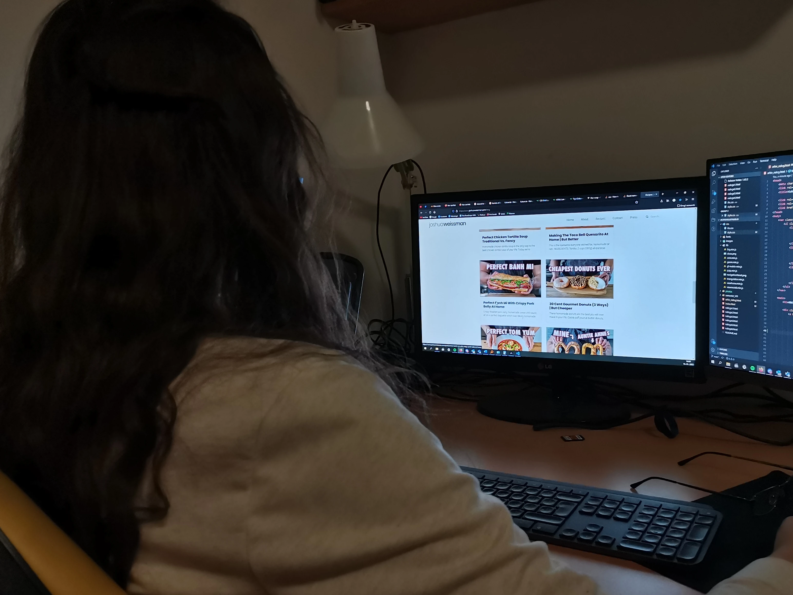
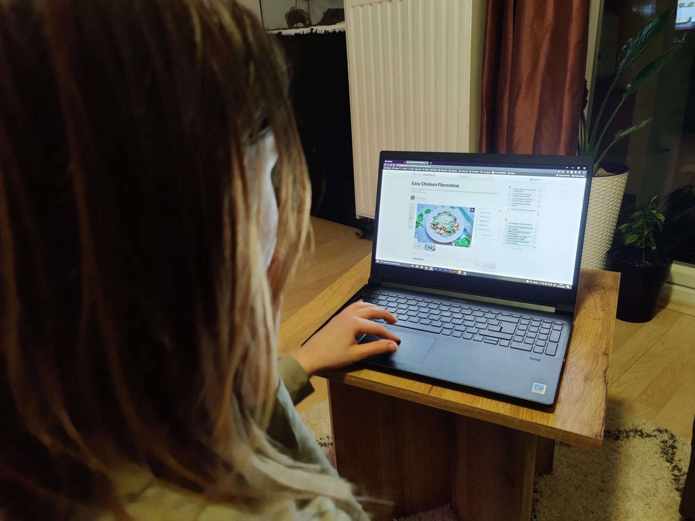
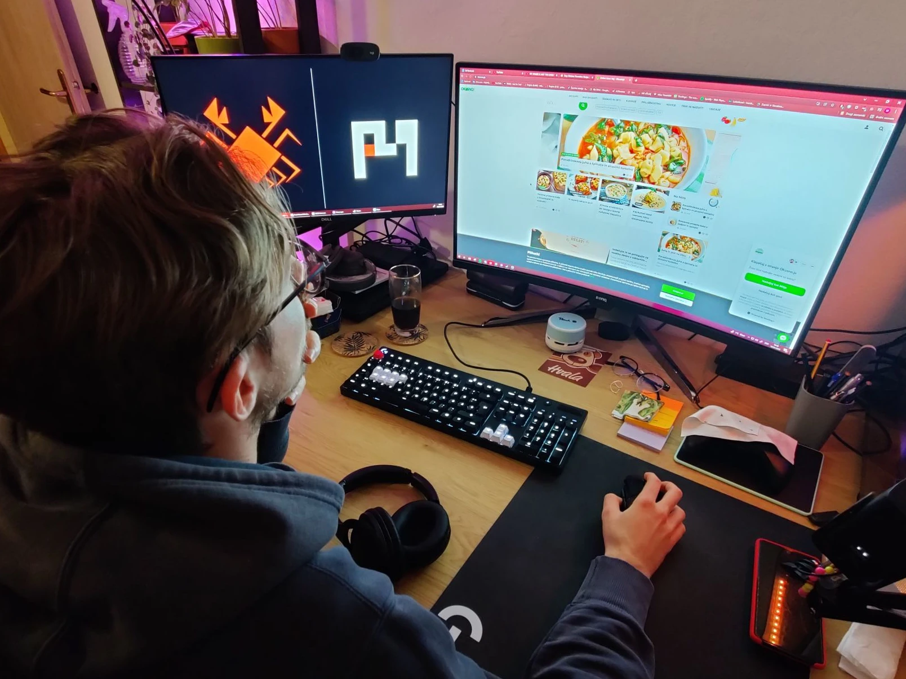

NEEDFINDING
Da smo lahko ustrezno nadaljevali s projektom smo se morali seznaniti s tem, kaj bi bilo najbolje vanj vključiti tako, da bi izboljšali uporabniško izkušnjo. Z needfindingom smo tako povabili tri prostovoljce, ki so pod našim nadzorom opravili kratke naloge in vmesno podajali lastna mnenja na že obstoječe sistemu.
1. OPIS PODROČJA IN PROJEKTA
Kuhanje je veščina, katere se mnogo ljudi izogiba, ker dvomijo v svoje sposobnosti ali pa ne najdejo časa za pripravo obroka. Staromodne kuharske knjige so drage in pogosto imajo na voljo veliko receptov, ki jih uporabnik morda ne bo nikoli preizkusil. Dilemo je rešil prihod interneta in vzpostavitev platform in forumov, na katerem so ljudje lažje delili svoje recepte in izkušnje z njimi. Nabor se je tako znatno povečal, vsekakor pa še ni usmerjene aplikacije, ki bi ponujala nabor receptov študentom in tistim, ki nimajo veliko časa za kuhanje. Študentski domovi in stanovanja ponujajo le ploščo za kuhanje, veliko pa se jih raje odloči za obedovanje v restavraciji na študentske bone ali pa si naročijo dostavo na dom, ker to vzame najmanj časa. Zagotovo pa ni najbolj ugodno, v mnogih primerih pa tudi nezdravo.
Aplikacija Kuharček je namenjena študentom in drugim uporabnikom, ki nimajo veliko časa za kuhanje in bi radi pripravili preproste in okusne jedi s čim manj sestavinami. Prednost aplikacije bo ravno ta prilagoditev receptov tako, da bodo čim lažji za izvedbo. Prav tako bo grajena na skupnosti, tako da si uporabniki splošno pomagaj z objavljanjem raznih receptov.
V nadaljevanju bomo lahko videli opis opazovanja, ki smo ga izvedli na treh posameznikih. Ob vsakem opazovanju so navedene tudi naloge, slike in ključne ugotovitve opazovanja.
2. OPIŠITE, KAKO SO TRI OSEBE IZVEDLE AKTIVNOSTI, KI STE JIH IZBRALI ZA OPAZOVANJE
Naloga 1: Na spletu poišči platformo ali omrežje za deljenje receptov.
Izbrana metoda je bila opazovanje. Kandidatom sem naročil, naj na spletu najdejo platformo za deljenje receptov. Sam sem se oddaljil in opazoval, kako kandidati pristopijo k reševanju zadane naloge. Dodajam, da nisem postavljal dodatnih vprašanj ali komentarjev, in če so me kandidati pogledali, nisem nakazal nobene mimike ali spremembe obraza.
Skupne točke vseh treh opazovancev:
- "Preveč je teh strani …"
- "Zakaj so merske enote ameriške?!"
- "Večine sestavin se pri nas sploh ne dobi …"
- "Nimam pojma, če je recept sploh dober"
- "Ta spletna stran mi ni všeč in bom raje poiskal drugo."
- "Vsak ima recept napisano drugače. Kako vem, kateri je najboljši"
Po izbrani spletni strani, ki ponuja širok izbor receptov je vsak kandidat dobil novo nalogo, le-te so se razlikovale pri vsakem kandidatu, da sem lahko lažje in temeljito razvidel, razvil, in določil potrebne cilje in zahteve, ki jih bom upošteval pri razvoju aplikacije Kuharček.
UPORABNIK 1: Klavdija Zelko

Klavdija je študentka razredne kemije in matematike na Fakulteti za Naravoslovje in Matematiko. Dobro ve pripraviti kemijske spojine in izračunati formule, ima pa strah pred poskušanjem v kuhanju.
Izbrana spletna stran: Joshua Weissman
Naloga 2.1: Na izbrani spletni strani najdi recept za italijansko vročo čokolado.
Uporabnica je prišla na izbrano spletno stran ter z očmi hitro preletela odprto stran. Z miško se je pomaknila proti okvirčku, v katerem je pisalo »search«. Ob njem je stala tudi ikonica lupe. Ko je začela tipkati zadano besedno zvezo, so se ji že prikazovali možni rezultati kot predlog za iskanje vsebine. Po par vnesenih znakih se je ustavila, zgrabila miško, podrsnila s kurzorjem proti prvi besedni zvezi, ki se je pojavila pod iskalnikom. Ko je kliknila nanjo, so se pričeli izpisovati rezultati. Zastala je za par sekund in pričela brati opise člankov. Ko je kliknila na okno, ki se ji je zdelo najbolj ustrezno, so se ji izpisali video in recept. Pogledala je video in prešla naravnost na recept in sestavine. Začudeno je brala vsebino in jezno podrsela v sekcijo komentarjev na strani. Recept, ki ga je iskala, je bil zapisan v komentarjih, ker je video pokrival štiri različne recepte in v vsebini izpisal le enega.
Kritična točka: recept ni bil popoln
Uporabnica je razočarana nad spletno stranjo, saj je bila prepričana, da je vnesla pravilen iskalni niz, zato da je na koncu morala obvezno pogledati videoposnetek, ki ni takoj prešel k bistvu. Hkrati jo je ujezilo, da so bili predstavljeni štirje recepti, zapisan pa je bil uradno le en. Čeprav je našla recept, he izjavila, da ji to ni podalo dobrega vtisa.
Priložnost: gumb za iskanje
Uporabnica je na začetni strani dlje iskala gumb za iskanje po receptih. Po njenem mnenju se je zlil z ostalo vsebino, tako da bi moral biti postavljen na bolj vidnem mestu z bolj jasno ikono. Komentar se bo upošteval pri ustvarjanju sistema Kuharček.
UPORABNIK 2: Anamarija Valentina Dajnko

Anamarija je študentka medijskih komunikacij v Mariboru. Sama že vrsto let pripravlja domače jedi, tako zdrave in hranilne. Pogosto se tudi odloča, da razširi svoje znanje in poskusi nekaj novega.
Izbrana spletna stran: Allrecipes.com
Naloga 2.2: Na izbrani spletni strani najdi recept za paprikaš uporabnika Chef John
Uporabnica je počakala, da se ji spletna stran temeljito naloži. Z očmi je preletela stran in hitro našla okno za iskanje receptov. V iskalnik je zapisala besedno zvezo »Paprikash« in kliknila gumb išči. Ko ji je izpisalo rezultate, je pri vsakem pregledala avtorje. Med tem je komentirala, da niso vse slike najbolj privlačne. Ko je našla iskanega avtorja, je kliknila na recept in odprlo se ji je okno, ki pa je po strukturi in dizajnu popolnoma drugačno od iskalnika. Za trenutek se je ustavila in pregledala, če je sploh prišla na pravo stran. Domena strani je bila enaka, vendar ji je ta sprememba bolj pritegnila pozornost, kot sam recept. Navdušilo jo je, da je zapisan čas priprave in kuhanja, saj mnogo receptov zapiše samo čas kuhanja. Ker pa živi le z mamo, jo je pri pregledu zmotilo, da ni morala spremeniti števila oseb. Ko je podrsela po strani navzdol, je opazila število 8, ki ga je lahko spremenila in vrednosti sestavin so se prav tako spremenile. Ko je podrsela dlje dol, se je spremni video pričel predvajati v plavajočem oknu in to ji je bilo všeč.
Kritična točka: drastična sprememba strani
Kritična točka v tem primeru je bila, da se je ob kliku na najdeni recept stran popolnoma posodobila in pokazala drugačno obliko in barvno strukturo kot prej. Slednje jo je zmotilo in odvrnilo od tega, kar je prišla delat na prvem. Meni, da bi celotni sistem moral imeti poenoten izgled in strukturo.
Priložnost: spreminjanje zapisa recepta na podlagi števila oseb za kuhanje
Uporabnici je bilo zelo všeč, daj je lahko spremenila ciljano število ljudi, katerim je recept namenjen. Tako se ji je recept samodejno posodobil in ni potrebovala računati in odštevati od prvotne zasnove recepta. Izpostavljeno možnost bom poskusil uporabiti tudi v sistemu Kuharček.
UPORABNIK 3: Mitja Potočnik

Mitja je študent medijskih komunikacij v Mariboru, ki preko študenta opravlja majhno delo v športnem novinarstvu. Njegova partnerka mu veliko kuha, vendar mu mnogokrat noče pripraviti hrane, katere sama ne jé. Zato je primoran se potruditi in tisto res željeno pripraviti kar sam.
Izbrana spletna stran: Okusno.je
Naloga 2.3) Na izbrani spletni strani najdi recept za testeninsko solato in se na podlagi odzivov drugih uporabnikov prepričaj, če je res dober.
Ko je Mitja odprl izbrano stran, je samo glasno zavzdihnil. Hitro je zaprl plavajoči klepetalnik in ogromno okno za piškotke. Pogledal je tekoči trak slik in si obrisal oči. Hitro je navigiral do okenca za iskanje in vanj vpisal besedno zvezo »testeninska solata«. Razočarano je pripomnil, da iskalni niz sploh ne paše v iskalnik in da se je začel na eni točki skrivati. Ko je dobil rezultate, je pregledal slike in rekel, da jih je večina všečnih. Pogledal je zapisane podatke in se začudil ob vrednosti ena kuharska kapic od treh. Domneval je, da je to kakovost, ampak je šele pozneje v stranskem meniju opazil, da to pomeni težavnost. Ko je odprl enega od receptov, se je zopet ujezil, saj mu je zatemnilo ekran in vrglo pojavno okno za naročanje na e-novičke. Hitro jo je zaprl. Ni zmogel pregledati komentarjev, ker ni bilo nobenih. Izjavil je, da bi pristnost dosti lažje izvedel, če bi bilo vključeno ocenjevanje ali morda kakšni všečki. Na stran se ne bo več vrnil, ker mu je po njegovem mnenju odpirala veliko preveč pojavnih oken.
Kritična točka: motnja pri iskanju
Uporabnika je zelo zmotilo, da je njegov tok dela prekinjal sistem z vsiljivimi ponudbami asistentov in naročanja na novice. Zdeli so se mu nepotrebni in so ga samo odvračali od tistega, kar je iskal. Tudi to, da je iskalec nepopoln, ga je močno zmotilo.
Priložnost: ocenjevanje recepta
Kandidat je izpostavil, da bi bilo lepo vedeti, kaj si drugi mislijo o receptu na podlagi hitre ocene, da mu ne bi bilo treba prečesavati komentarjev, ki jih sploh ni bilo. Takšna vrsta podaje povratne informacije je po njegovem mnenju hitra in ne zahteva iskanja besed. Tovrstno idejo bom poskusil implementirati v moj sistem Kuharček.
3. NAPIŠITE SEZNAM ZAHTEV/CILJEV/NALOG, KI STE JIH ZAZNALI MED OPAZOVANJEM.
Del seznama zahtev/ciljev/nalog je nastal s pomočjo opazovane metode treh uporabnikov, ki so opisani zgoraj. Del navedenih alinej pa sem ustvaril s pomočjo kratkega intervjuja z znancema, ki pogosto iščeta recepte na spletnih platformah.
SPLOŠNA UPORABA
- Uporabnik želi imeti možnost ocenjevanja (označeno s petimi zvezdicami), da bo imel lažjo nalogo pri izbiri ustreznega recepta.
- Uporabnik želi imeti možnost komentiranja receptov, da lahko dobrim res poda kakšno pohvalo ali morebiti celo namig za spremembo.
- Uporabnik želi imeti na vidnem mestu izpostavljen gumb iskanje, da bo lahko hitro dostopal do njega in takoj prešel na iskanje novih receptov.
- Uporabnik želi poenoten izgled sistema, ki se ne bo spreminjal po strukturi in grafiki.
- Uporabnik noče, da bo njegovo uporabo aplikacije motila pojavna okna.
PREGLED RECEPTA
- Uporabnik želi pri iskanju recepta vedeti splošne informacije, najbolj, kakšna je ocena recepta, koliko všečkov ima, koliko komentarjev ter kako dolga je priprava in zahtevnost priprave.
- Uporabnik želi, da se zraven recepta izpiše, kdo ga je ustvaril oziroma, kdo je avtor.
- Uporabnik želi, da bo lahko spremenil število oseb, za katere se pripravlja recept in tako dobil ustrezno vrnjene vrednosti za ljudi po njegovi lastni izbiri.
- Uporabnik želi, da bo lahko neki najdeni recept shranil na mesto, kjer bo znova preprosto dostopen.
- Uporabnik želi, da bi imel možnost bralnega načina, v katerem je izpisano večje, bolj vidno besedilo brez večjih olepšav.
MOŽNOSTI UPORABNIKA
- Uporabnik želi možnost ustvarjanja lastnih profilov, da lahko prične s shranjevanjem in deljenjem receptov.
- Uporabnik želi imeti na prvi strani prikazane vroče nove recepte, da se lahko seznani, kaj je trenutno aktualno.
- Uporabnik želi imeti galerijo shranjenih receptov, kjer bo lahko pregledoval in razporejal recepte, ki so mu najbolj všeč.
- Uporabnik želi v iskalniku receptov podajati značke, da mu ne bo treba besedno iskati za jedmi, ki imajo težji zapis oziroma izgovorjavo.
- Uporabnik želi urejanje lastnega profila in pregled receptov, ki jih bo morda sam objavil v sistemu.